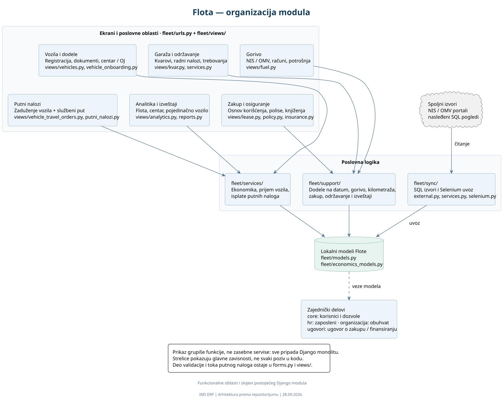
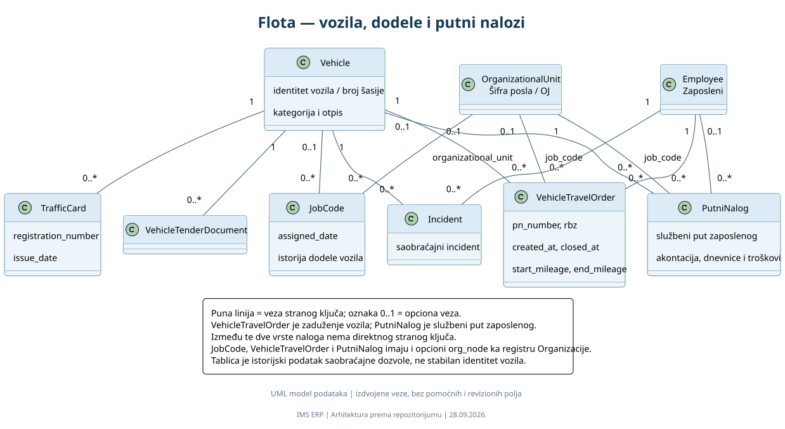
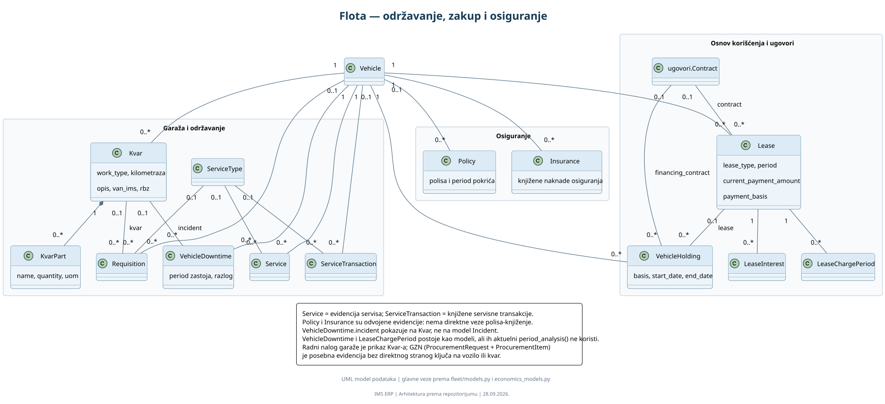
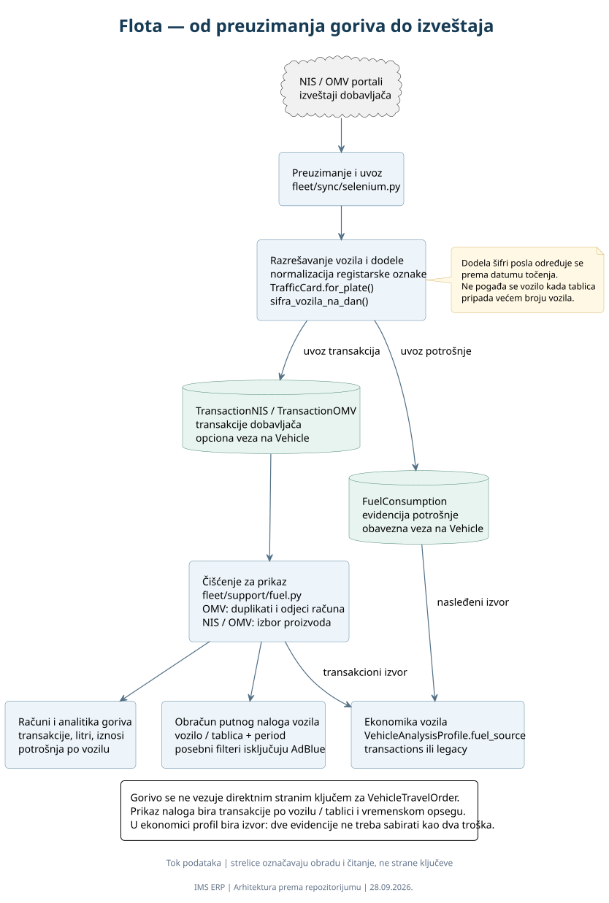
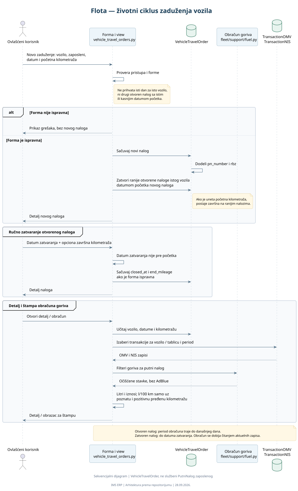
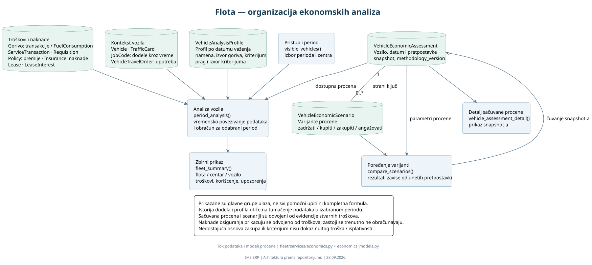

Flota: organizacija modula
Ekrani, poslovna logika, modeli i spoljni izvori.
Vozila, garaža, gorivo, zakup, osiguranje, putni nalozi i ekonomske analize.
Počnite od organizacije modula, pa otvorite oblast koju želite da istražite. Za uvećanje otvorite SVG; za izmene koristite PlantUML izvor i Alt+D u VS Code-u.

Ekrani, poslovna logika, modeli i spoljni izvori.

Vozila, saobraćajne dozvole, istorija dodela i dve vrste naloga.

Garaža, servisi, trebovanja, zastoji, zakup i osiguranje.

NIS / OMV, uvoz, razrešavanje vozila, čišćenje i izveštaji.

Otvaranje, automatsko i ručno zatvaranje, obračun i štampa.

Izvori troškova, profil vozila, period analize i poređenje scenarija.